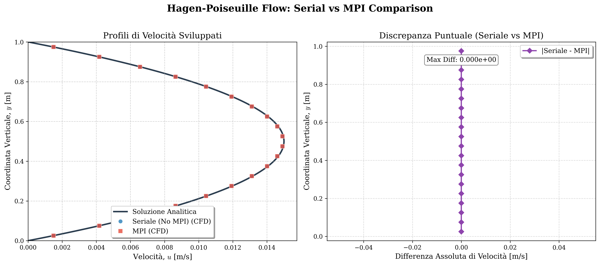

MPIDecomposition - domain decomposition
The global mesh is split into contiguous strips, one per rank. In 3-D a strip
spans the full depth: z is never split, so the halos are (depth × nz × length) slabs.
- Y-direction (row strips) when every rank can own at least
kHaloDepth = 2rows ($n_y \ge 2N$). - X-direction (column strips) otherwise, as long as $n_x \ge 2N$. This lets nearly 1-D problems, such as Shu-Osher with $n_y = 2$, use many ranks.
Rows or columns are distributed as evenly as possible, the counts differing by at most one. Every strip keeps at least two cells, the depth the halo exchange sends; a run whose ranks cannot all get two cells is rejected with an explicit error.
Halo exchange
Before every residual evaluation each rank exchanges its two outermost rows or columns
(in 3-D, its two outermost slabs) with its neighbours. The exchange uses non-blocking MPI_Isend / MPI_Irecv pairs:
all four messages are posted before the MPI_Waitall, which prevents deadlock. Tag 10
carries messages toward the higher rank and tag 20 toward the lower rank. Periodic
boundaries in the decomposition direction wrap around between the first and last rank.
The halos are used everywhere a stencil crosses the interface:
- Convective faces. They replace the BC ghost states, so the Riemann problem sees the true neighbour.
- MUSCL. Interface faces are reconstructed to 2nd order from the 2-cell halo.
- Viscous terms. The halo row/column fills the padded state, and the neighbour's
tangential gradients (
CrossGhosts) complete the cross-derivative averages. - IBM. Halos carry the forced state, the fringe test of the solid reset sees solid or fluid neighbours across the interface, and every strip uses its slice of the global mask.
- Mass-flow inlets. The inlet-average density is all-reduced over the ranks sharing the inlet.
- Time step. $S_{\max}$ (and the BDF2 residual norm) are all-reduced, so every rank takes the same $\Delta t$.
The result is that an MPI run reproduces the serial run: identical for 3 or 4 ranks
in both decomposition directions, in 2-D and 3-D, and to ~1e-14 for mass-flow inlets, where the inlet sum
is associated differently. Rank 0 gathers the global field for every VTK snapshot and
checkpoint. Each rank uses one OpenMP thread unless --threads or OMP_NUM_THREADS
asks for more.

API reference fv/MPIDecomposition.hpp
Splits the global nx x ny mesh into contiguous strips, one per rank.
Decomposition over comm; throws if no direction gives every rank kHaloDepth cells.